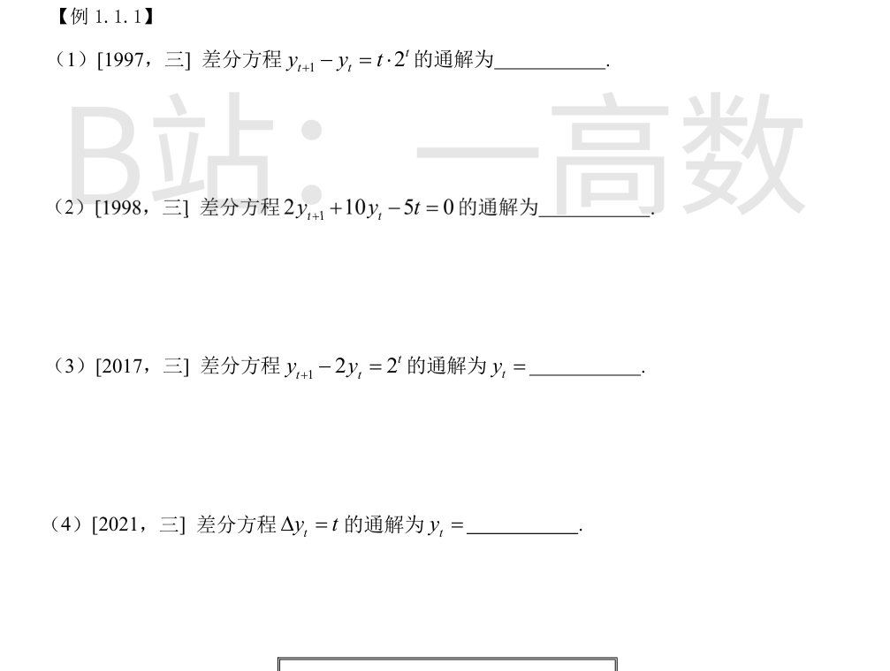
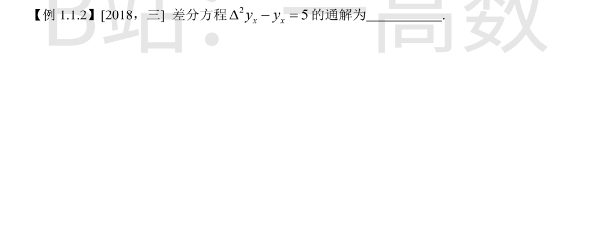
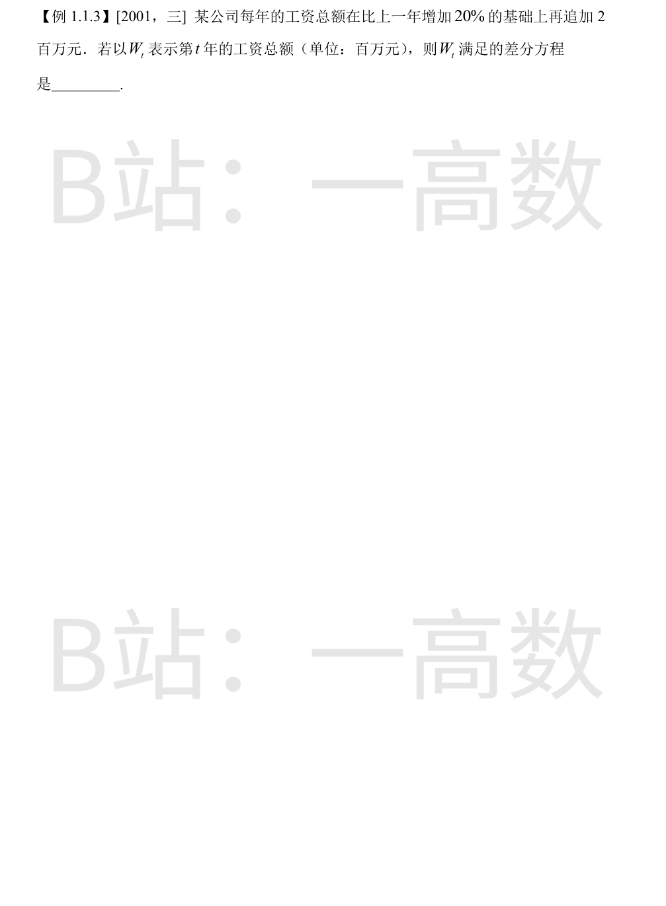

齐次方程 y_{t+1}-y_t=0 的特征方程 \lambda-1=0，\lambda=1，齐次通解 y_h=C。
自由项为 t\cdot 2^t，且 2 不是特征根，设特解 y^*=2^t(At+B)：
$$y^*_{t+1}-y^*_t=2^{t+1}[A(t+1)+B]-2^t(At+B)=2^t\left[At+(2A+B)\right]=t\cdot 2^t$$
比较得 A=1，2A+B=0，即 B=-2，故 y^*=(t-2)2^t。
通解为
$$y_t=C+(t-2)2^t.$$
方程化为 y_{t+1}+5y_t=\frac{5}{2}t。
特征方程 \lambda+5=0，\lambda=-5，齐次通解 y_h=C(-5)^t。
设特解 y^*=At+B，代入：
$$A(t+1)+B+5(At+B)=6At+(A+6B)=\frac{5}{2}t$$
得 6A=\frac{5}{2}\Rightarrow A=\frac{5}{12}，A+6B=0\Rightarrow B=-\frac{5}{72}。
通解为
$$y_t=C(-5)^t+\frac{5}{12}t-\frac{5}{72}=C(-5)^t+\frac{5}{72}(6t-1).$$
特征方程 \lambda-2=0，\lambda=2，齐次通解 y_h=C\cdot 2^t。
自由项 2^t 中 2 恰为特征根，设特解 y^*=At\cdot 2^t：
$$y^*_{t+1}-2y^*_t=A(t+1)2^{t+1}-2At\cdot 2^t=2A\cdot 2^t=2^t \Rightarrow A=\frac{1}{2}$$
故 y^*=\frac{t}{2}2^t=t\cdot 2^{t-1}。
通解为
$$y_t=C\cdot 2^t+t\cdot 2^{t-1}=\left(C+\frac{t}{2}\right)2^t.$$
即 y_{t+1}-y_t=t。齐次通解 y_h=C（特征根 \lambda=1）。
设特解 y^*=at^2+bt（右端为一次，特解升二次）：
$$y^*_{t+1}-y^*_t=a(2t+1)+b=2at+(a+b)=t$$
得 2a=1，a+b=0，即 a=\frac12，b=-\frac12，y^*=\frac{t^2}{2}-\frac{t}{2}=\frac{t(t-1)}{2}。
（另一法：逐次累加 y_t=y_0+\sum_{k=0}^{t-1}k=y_0+\frac{t(t-1)}{2}，结果一致。）
通解为
$$y_t=C+\frac{1}{2}t(t-1).$$

由二阶差分定义
$$\Delta^2 y_x=\Delta(y_{x+1}-y_x)=y_{x+2}-2y_{x+1}+y_x,$$
原方程化为
$$y_{x+2}-2y_{x+1}=5.$$
齐次方程 y_{x+2}-2y_{x+1}=0 的特征方程 \lambda^2-2\lambda=0，\lambda_1=0，\lambda_2=2，齐次通解 C_1\cdot 0^x+C_2\cdot 2^x；对 x\ge 1 有 0^x=0，故齐次通解实为 C\cdot 2^x。
设特解 y^*=a（常数），代入得 a-2a=-a=5，即 a=-5。
故通解为
$$y_x=C\cdot 2^x-5.$$

第 t+1 年的工资总额 = 第 t 年总额的基础上增加 20%（即乘 1.2），再追加 2 百万元：
$$W_{t+1}=1.2W_t+2,$$
即
$$W_{t+1}-1.2W_t=2\quad(t=0,1,2,\dots),$$
等价写法 W_t=1.2W_{t-1}+2\ (t\ge 1)。